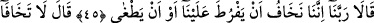

BİZ SENİN RABBİNİN
ELÇİLERİYİZ
45. Dediler ki: Rabbimiz! Doğrusu biz, onun bize aşırı derecede kötü
davranmasından yahut iyice azmasından endişe ediyoruz.
46. Buyurdu ki: Korkmayın, çünkü ben sizinle beraberim; işitir ve görürüm.
47. Haydi, ona gidin de deyin ki: Biz, senin Rabbinin elçileriyiz. İsrailoğulları’nı
hemen bizimle birlikte gönder; onlara eziyet etme! Biz, senin Rabbinden bir âyet
getirdik. Kurtuluş, hidayete uyanlarındır.
48. Hakikaten bize vahyolundu ki: (Peygamberleri) yalanlayan ve yüz
çevirenlere azâb edilecektir.
Mûsâ ile Hârun (a.s.): “dediler ki: Rabbimiz!”
el-İrşâd’da şöyle der: “Bu sözler her ne kadar Mûsâ ve Hârun (a.s.)’a isnâd
olunmakta ise de, aslında Mûsâ (a.s.)’ın sözleridir. Bu, söz ve fiillerde asâletin Mûsâ
(a.s.)’da olduğunu, Hârun (a.s.)’ın yapılan ve yapılmayan her şeyde ona tâbi olduğunu
bildirmek içindir.
Rivâyete göre Mûsâ (a.s.) Tur’dan ayrılıp Mısır’a doğru yola koyuldu. Ne yolu
biliyordu ne de yanında yiyecek, binecek ve arkadaş vardı. Yanında olan tek şey
asâsıydı. Gündüz susuz, gece aç kalırdı. Biraz meyve toplayarak, biraz da av avlayarak
sonunda Mısır’a ulaştı.
Kâşifî şöyle der: “Mûsâ (a.s.) Mısır’a doğru yola koyulunca kardeşi Hârun (a.s.)’a:
‘Kardeşini karşılamak için çabucak Medyen yoluna git.’ diye vahyolundu. Yolda
karşılaştılar. Mûsâ (a.s.) olup bitenlerin tamamını ona açıkladı. Hârun (a.s.): ‘Ey
birader, Fir’avn’un şevket ve azameti senin bildiğinden daha fazladır. Basit bir sebeple
insanların uzuvlarının kesilmesine, öldürülmesine ve asılmasına hükmeder.’ dedi. Mûsâ
(a.s.) endişelendi. Her iki kardeş ittifakla “Ey Rabbimiz!…” dediler.”
“Doğrusu biz, onun bize aşırı derecede kötü davranmasından…”
; kasd ile öne geçmek ileri gitmek demektir. Buradan kovaları tâmir etmek için